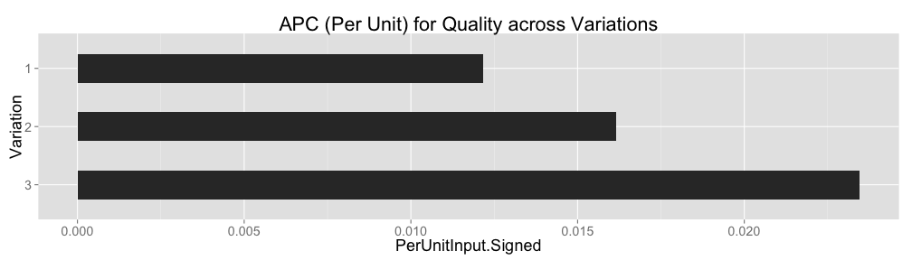
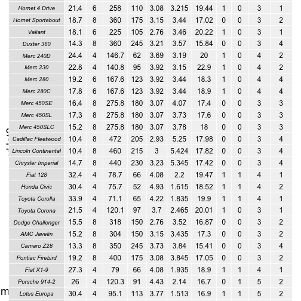
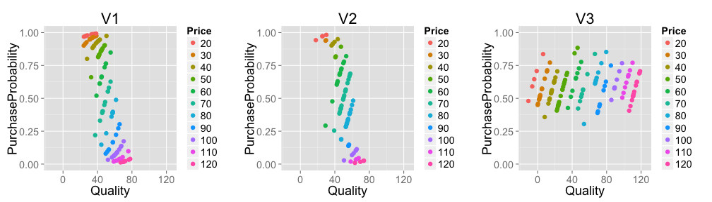
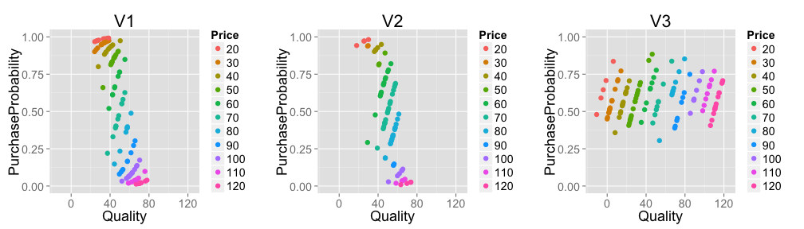

Generalizing Linear Regression


David Chudzicki
True model: \(P(\text{wine is purchased}) = logit^{-1}(0.1 Q - 0.12 P)\)
Price and quality are (noisily) related:
(A random subset of the data. For clarity, showing only a discrete subset of prices.)
For each individual price, quality vs. purchase probability forms a portion of a shifted inverse logit curve:
In another possible world, mid-range wines are more common:
In a third possible world, price varies more strongly with quality:
Again:
… across all price ranges (for the kinds of variation that we see in the data)
 
These concepts are vague, but keep them in mind as we try to formalize things in the next few slides:
For each input, what is the average change in output per unit change in input? (generalizes linear regression, units depend on units for input)
How important is each input in influencing the output? (units should be consistent across inputs – think of standardized regression coefficients)
\(u\): the variable under consideration
\(v\): the vector of other variables (the “all else held equal”)
\(f(u,v)\): a function that makes predictions, e.g. maybe \(f(u,v) = \mathcal{E}[y \mid u, v, \theta]\)
The APC is defined as
\[\frac{\mathcal{E}[\Delta_f]}{\mathcal{E}[\Delta_u]}\]
where
 

Exercise for the reader: Make an example where APC is larger than in Variation 1 but “Impact” is much smaller.
Target:
Features:
Note: previous lateness (esp. 90+) days is rare.
We’ll use a random forest for this example:
set.seed(1)
# Turning the response to type "factor" causes the RF to be build for classification:
credit$SeriousDlqin2yrs <- factor(credit$SeriousDlqin2yrs)
rfFit <- randomForest(SeriousDlqin2yrs ~ ., data=credit, ntree=ntree)set.seed(1)
apcDF <- GetPredCompsDF(rfFit, credit,
numForTransitionStart = numForTransitionStart,
numForTransitionEnd = numForTransitionEnd,
onlyIncludeNearestN = onlyIncludeNearestN)##
##
## |Input | PerUnitInput.Signed| PerUnitInput.Absolute| Impact.Signed| Impact.Absolute|
## |:------------------------------------|-------------------:|---------------------:|-------------:|---------------:|
## |RevolvingUtilizationOfUnsecuredLines | 0.0826| 0.1590| 0.0245| 0.0471|
## |age | -0.0003| 0.0025| -0.0047| 0.0363|
## |NumberOfTime30.59DaysPastDueNotWorse | 0.0387| 0.0706| 0.0149| 0.0271|
## |DebtRatio | 0.0087| 0.1888| 0.0016| 0.0350|
## |MonthlyIncome | 0.0000| 0.0000| 0.0011| 0.0331|
## |NumberOfOpenCreditLinesAndLoans | 0.0016| 0.0077| 0.0071| 0.0339|
## |NumberOfTimes90DaysLate | 0.1511| 0.1889| 0.0214| 0.0268|
## |NumberRealEstateLoansOrLines | 0.0029| 0.0229| 0.0021| 0.0168|
## |NumberOfTime60.89DaysPastDueNotWorse | 0.0920| 0.1853| 0.0078| 0.0157|
## |NumberOfDependents | 0.0042| 0.0185| 0.0042| 0.0183|(Showing +/- the absolute impact, since signed impact is bounded between those numbers)
(Showing impact rather than APC b/c the different APC units wouldn’t be comparable, shouldn’t go on one chart)
Summaries like this can guide questions that push is to dig deeper, like:
… but in one case, probability of default decreases with the 0-to-1 transition
##
##
## | | RevolvingUtilizationOfUnsecuredLines| age| DebtRatio| MonthlyIncome| NumberOfOpenCreditLinesAndLoans|
## |:--|------------------------------------:|---:|---------:|-------------:|-------------------------------:|
## |15 | 1| 27| 0.1543| 4800| 4|##
##
## | | NumberOfTimes90DaysLate| NumberRealEstateLoansOrLines| NumberOfTime60.89DaysPastDueNotWorse|
## |:--|-----------------------:|----------------------------:|------------------------------------:|
## |15 | 1| 0| 0|##
##
## | | NumberOfDependents| NumberOfTime30.59DaysPastDueNotWorse|
## |:--|------------------:|------------------------------------:|
## |15 | 0| 0|partialPlot function in randomForest library in RThis accounts for relationships among the “all else held equal” but not between those and the input under consideration
Make predictions on a new data set constructed as follows:
One row:
##
##
## | v1|v2 | v3| u|
## |--:|:--|---:|--:|
## | 1|a | 2.3| 6|Repeat the row varying \(u\) across its whole range:
##
##
## | | v1|v2 | v3| u|
## |:----|--:|:--|---:|--:|
## |1 | 1|a | 2.3| 1|
## |1.1 | 1|a | 2.3| 2|
## |1.2 | 1|a | 2.3| 3|
## |1.3 | 1|a | 2.3| 4|
## |1.4 | 1|a | 2.3| 5|
## |1.5 | 1|a | 2.3| 6|
## |1.6 | 1|a | 2.3| 7|
## |1.7 | 1|a | 2.3| 8|
## |1.8 | 1|a | 2.3| 9|
## |1.9 | 1|a | 2.3| 10|
## |1.10 | 1|a | 2.3| 11|
## |1.11 | 1|a | 2.3| 12|
## |1.12 | 1|a | 2.3| 13|
## |1.13 | 1|a | 2.3| 14|
## |1.14 | 1|a | 2.3| 15|
## |1.15 | 1|a | 2.3| 16|
## |1.16 | 1|a | 2.3| 17|
## |1.17 | 1|a | 2.3| 18|
## |1.18 | 1|a | 2.3| 19|
## |1.19 | 1|a | 2.3| 20|Things that vary
##
##
##
##
## | | OriginalRowNumber| age| DebtRatio| MonthlyIncome| NumberOfOpenCreditLinesAndLoans| NumberOfTime30.59DaysPastDueNotWorse| NumberOfTime30.59DaysPastDueNotWorse.B| yHat1| yHat2| Weight|
## |:---|-----------------:|---:|---------:|-------------:|-------------------------------:|------------------------------------:|--------------------------------------:|-----:|-----:|------:|
## |25 | 1| 24| 0| 200| 0| 0| 0| 0.01| 0.01| 7e-04|
## |47 | 1| 24| 0| 200| 0| 0| 0| 0.01| 0.01| 9e-04|
## |48 | 1| 24| 0| 200| 0| 0| 0| 0.01| 0.01| 8e-04|
## |79 | 1| 24| 0| 200| 0| 0| 0| 0.01| 0.01| 8e-04|
## |119 | 1| 24| 0| 200| 0| 0| 0| 0.01| 0.01| 6e-04|
## |128 | 1| 24| 0| 200| 0| 0| 0| 0.01| 0.01| 8e-04|
##
##
##
##
## | | OriginalRowNumber| age| DebtRatio| MonthlyIncome| NumberOfOpenCreditLinesAndLoans| NumberOfTime30.59DaysPastDueNotWorse| NumberOfTime30.59DaysPastDueNotWorse.B| yHat1| yHat2| Weight|
## |:--|-----------------:|---:|---------:|-------------:|-------------------------------:|------------------------------------:|--------------------------------------:|-----:|-----:|------:|
## |5 | 2| 48| 0.4852| 3317| 4| 0| 0| 0.03| 0.03| 0.0009|
## |22 | 2| 48| 0.4852| 3317| 4| 0| 0| 0.03| 0.03| 0.0019|
## |29 | 2| 48| 0.4852| 3317| 4| 0| 0| 0.03| 0.03| 0.0014|
## |31 | 2| 48| 0.4852| 3317| 4| 0| 2| 0.03| 0.53| 0.0009|
## |78 | 2| 48| 0.4852| 3317| 4| 0| 1| 0.03| 0.11| 0.0008|
## |86 | 2| 48| 0.4852| 3317| 4| 0| 0| 0.03| 0.03| 0.0010|
##
##
##
##
## | | OriginalRowNumber| age| DebtRatio| MonthlyIncome| NumberOfOpenCreditLinesAndLoans| NumberOfTime30.59DaysPastDueNotWorse| NumberOfTime30.59DaysPastDueNotWorse.B| yHat1| yHat2| Weight|
## |:---|-----------------:|---:|---------:|-------------:|-------------------------------:|------------------------------------:|--------------------------------------:|-----:|-----:|------:|
## |43 | 3| 63| 0.1954| 6335| 5| 0| 0| 0| 0| 0.0009|
## |58 | 3| 63| 0.1954| 6335| 5| 0| 0| 0| 0| 0.0011|
## |64 | 3| 63| 0.1954| 6335| 5| 0| 0| 0| 0| 0.0013|
## |74 | 3| 63| 0.1954| 6335| 5| 0| 0| 0| 0| 0.0009|
## |106 | 3| 63| 0.1954| 6335| 5| 0| 0| 0| 0| 0.0010|
## |121 | 3| 63| 0.1954| 6335| 5| 0| 0| 0| 0| 0.0011|
##
##
##
##
## | | OriginalRowNumber| age| DebtRatio| MonthlyIncome| NumberOfOpenCreditLinesAndLoans| NumberOfTime30.59DaysPastDueNotWorse| NumberOfTime30.59DaysPastDueNotWorse.B| yHat1| yHat2| Weight|
## |:---|-----------------:|---:|---------:|-------------:|-------------------------------:|------------------------------------:|--------------------------------------:|-----:|-----:|------:|
## |21 | 4| 67| 0.1387| 7900| 5| 0| 0| 0| 0.00| 0.0012|
## |42 | 4| 67| 0.1387| 7900| 5| 0| 0| 0| 0.00| 0.0009|
## |72 | 4| 67| 0.1387| 7900| 5| 0| 0| 0| 0.00| 0.0012|
## |131 | 4| 67| 0.1387| 7900| 5| 0| 0| 0| 0.00| 0.0009|
## |158 | 4| 67| 0.1387| 7900| 5| 0| 0| 0| 0.00| 0.0008|
## |165 | 4| 67| 0.1387| 7900| 5| 0| 2| 0| 0.02| 0.0008|
##
##
##
##
## | | OriginalRowNumber| age| DebtRatio| MonthlyIncome| NumberOfOpenCreditLinesAndLoans| NumberOfTime30.59DaysPastDueNotWorse| NumberOfTime30.59DaysPastDueNotWorse.B| yHat1| yHat2| Weight|
## |:---|-----------------:|---:|---------:|-------------:|-------------------------------:|------------------------------------:|--------------------------------------:|-----:|-----:|------:|
## |3 | 5| 49| 0.2847| 10112| 9| 0| 0| 0| 0.0| 0.0008|
## |24 | 5| 49| 0.2847| 10112| 9| 0| 1| 0| 0.1| 0.0012|
## |38 | 5| 49| 0.2847| 10112| 9| 0| 0| 0| 0.0| 0.0009|
## |75 | 5| 49| 0.2847| 10112| 9| 0| 1| 0| 0.1| 0.0010|
## |84 | 5| 49| 0.2847| 10112| 9| 0| 0| 0| 0.0| 0.0012|
## |111 | 5| 49| 0.2847| 10112| 9| 0| 0| 0| 0.0| 0.0008|
##
##
##
##
## | | OriginalRowNumber| age| DebtRatio| MonthlyIncome| NumberOfOpenCreditLinesAndLoans| NumberOfTime30.59DaysPastDueNotWorse| NumberOfTime30.59DaysPastDueNotWorse.B| yHat1| yHat2| Weight|
## |:---|-----------------:|---:|---------:|-------------:|-------------------------------:|------------------------------------:|--------------------------------------:|-----:|-----:|------:|
## |18 | 6| 47| 0.1326| 9102| 8| 0| 0| 0| 0.00| 0.0009|
## |23 | 6| 47| 0.1326| 9102| 8| 0| 1| 0| 0.08| 0.0012|
## |83 | 6| 47| 0.1326| 9102| 8| 0| 0| 0| 0.00| 0.0012|
## |97 | 6| 47| 0.1326| 9102| 8| 0| 0| 0| 0.00| 0.0008|
## |129 | 6| 47| 0.1326| 9102| 8| 0| 0| 0| 0.00| 0.0010|
## |142 | 6| 47| 0.1326| 9102| 8| 0| 0| 0| 0.00| 0.0011|
##
##
##
##
## | | OriginalRowNumber| age| DebtRatio| MonthlyIncome| NumberOfOpenCreditLinesAndLoans| NumberOfTime30.59DaysPastDueNotWorse| NumberOfTime30.59DaysPastDueNotWorse.B| yHat1| yHat2| Weight|
## |:--|-----------------:|---:|---------:|-------------:|-------------------------------:|------------------------------------:|--------------------------------------:|-----:|-----:|------:|
## |7 | 7| 62| 0.4984| 4770| 6| 1| 0| 0| 0| 0.0011|
## |11 | 7| 62| 0.4984| 4770| 6| 1| 0| 0| 0| 0.0008|
## |16 | 7| 62| 0.4984| 4770| 6| 1| 1| 0| 0| 0.0010|
## |57 | 7| 62| 0.4984| 4770| 6| 1| 0| 0| 0| 0.0010|
## |59 | 7| 62| 0.4984| 4770| 6| 1| 0| 0| 0| 0.0008|
## |73 | 7| 62| 0.4984| 4770| 6| 1| 0| 0| 0| 0.0009|
##
##
##
##
## | | OriginalRowNumber| age| DebtRatio| MonthlyIncome| NumberOfOpenCreditLinesAndLoans| NumberOfTime30.59DaysPastDueNotWorse| NumberOfTime30.59DaysPastDueNotWorse.B| yHat1| yHat2| Weight|
## |:--|-----------------:|---:|---------:|-------------:|-------------------------------:|------------------------------------:|--------------------------------------:|-----:|-----:|------:|
## |10 | 8| 26| 0.4321| 2880| 5| 0| 0| 0.03| 0.03| 0.0011|
## |19 | 8| 26| 0.4321| 2880| 5| 0| 0| 0.03| 0.03| 0.0008|
## |34 | 8| 26| 0.4321| 2880| 5| 0| 0| 0.03| 0.03| 0.0008|
## |35 | 8| 26| 0.4321| 2880| 5| 0| 0| 0.03| 0.03| 0.0009|
## |46 | 8| 26| 0.4321| 2880| 5| 0| 0| 0.03| 0.03| 0.0011|
## |62 | 8| 26| 0.4321| 2880| 5| 0| 0| 0.03| 0.03| 0.0008|
##
##
##
##
## | | OriginalRowNumber| age| DebtRatio| MonthlyIncome| NumberOfOpenCreditLinesAndLoans| NumberOfTime30.59DaysPastDueNotWorse| NumberOfTime30.59DaysPastDueNotWorse.B| yHat1| yHat2| Weight|
## |:---|-----------------:|---:|---------:|-------------:|-------------------------------:|------------------------------------:|--------------------------------------:|-----:|-----:|------:|
## |30 | 9| 33| 0.0648| 400| 6| 0| 0| 0.01| 0.01| 0.0010|
## |40 | 9| 33| 0.0648| 400| 6| 0| 0| 0.01| 0.01| 0.0017|
## |41 | 9| 33| 0.0648| 400| 6| 0| 0| 0.01| 0.01| 0.0015|
## |51 | 9| 33| 0.0648| 400| 6| 0| 0| 0.01| 0.01| 0.0010|
## |71 | 9| 33| 0.0648| 400| 6| 0| 0| 0.01| 0.01| 0.0009|
## |114 | 9| 33| 0.0648| 400| 6| 0| 0| 0.01| 0.01| 0.0010|
##
##
##
##
## | | OriginalRowNumber| age| DebtRatio| MonthlyIncome| NumberOfOpenCreditLinesAndLoans| NumberOfTime30.59DaysPastDueNotWorse| NumberOfTime30.59DaysPastDueNotWorse.B| yHat1| yHat2| Weight|
## |:---|-----------------:|---:|---------:|-------------:|-------------------------------:|------------------------------------:|--------------------------------------:|-----:|-----:|------:|
## |76 | 10| 60| 0.6538| 5383| 15| 0| 0| 0.01| 0.01| 9e-04|
## |150 | 10| 60| 0.6538| 5383| 15| 0| 0| 0.01| 0.01| 9e-04|
## |152 | 10| 60| 0.6538| 5383| 15| 0| 0| 0.01| 0.01| 9e-04|
## |187 | 10| 60| 0.6538| 5383| 15| 0| 0| 0.01| 0.01| 9e-04|
## |188 | 10| 60| 0.6538| 5383| 15| 0| 0| 0.01| 0.01| 9e-04|
## |208 | 10| 60| 0.6538| 5383| 15| 0| 0| 0.01| 0.01| 8e-04|
##
##
##
##
## | | OriginalRowNumber| age| DebtRatio| MonthlyIncome| NumberOfOpenCreditLinesAndLoans| NumberOfTime30.59DaysPastDueNotWorse| NumberOfTime30.59DaysPastDueNotWorse.B| yHat1| yHat2| Weight|
## |:--|-----------------:|---:|---------:|-------------:|-------------------------------:|------------------------------------:|--------------------------------------:|-----:|-----:|------:|
## |14 | 11| 59| 0.6017| 2000| 4| 3| 0| 0.81| 0.65| 0.0010|
## |26 | 11| 59| 0.6017| 2000| 4| 3| 0| 0.81| 0.65| 0.0008|
## |32 | 11| 59| 0.6017| 2000| 4| 3| 0| 0.81| 0.65| 0.0016|
## |45 | 11| 59| 0.6017| 2000| 4| 3| 2| 0.81| 0.74| 0.0008|
## |54 | 11| 59| 0.6017| 2000| 4| 3| 2| 0.81| 0.74| 0.0010|
## |60 | 11| 59| 0.6017| 2000| 4| 3| 1| 0.81| 0.57| 0.0008|
##
##
##
##
## | | OriginalRowNumber| age| DebtRatio| MonthlyIncome| NumberOfOpenCreditLinesAndLoans| NumberOfTime30.59DaysPastDueNotWorse| NumberOfTime30.59DaysPastDueNotWorse.B| yHat1| yHat2| Weight|
## |:--|-----------------:|---:|---------:|-------------:|-------------------------------:|------------------------------------:|--------------------------------------:|-----:|-----:|------:|
## |6 | 12| 57| 0.5949| 5808| 8| 0| 0| 0.04| 0.04| 1e-03|
## |27 | 12| 57| 0.5949| 5808| 8| 0| 0| 0.04| 0.04| 1e-03|
## |33 | 12| 57| 0.5949| 5808| 8| 0| 0| 0.04| 0.04| 9e-04|
## |56 | 12| 57| 0.5949| 5808| 8| 0| 0| 0.04| 0.04| 1e-03|
## |93 | 12| 57| 0.5949| 5808| 8| 0| 0| 0.04| 0.04| 1e-03|
## |96 | 12| 57| 0.5949| 5808| 8| 0| 0| 0.04| 0.04| 8e-04|
##
##
##
##
## | | OriginalRowNumber| age| DebtRatio| MonthlyIncome| NumberOfOpenCreditLinesAndLoans| NumberOfTime30.59DaysPastDueNotWorse| NumberOfTime30.59DaysPastDueNotWorse.B| yHat1| yHat2| Weight|
## |:---|-----------------:|---:|---------:|-------------:|-------------------------------:|------------------------------------:|--------------------------------------:|-----:|-----:|------:|
## |1 | 13| 46| 0.3383| 9900| 13| 1| 0| 0.03| 0.03| 0.0008|
## |67 | 13| 46| 0.3383| 9900| 13| 1| 0| 0.03| 0.03| 0.0009|
## |94 | 13| 46| 0.3383| 9900| 13| 1| 0| 0.03| 0.03| 0.0011|
## |103 | 13| 46| 0.3383| 9900| 13| 1| 3| 0.03| 0.25| 0.0009|
## |107 | 13| 46| 0.3383| 9900| 13| 1| 1| 0.03| 0.03| 0.0010|
## |108 | 13| 46| 0.3383| 9900| 13| 1| 0| 0.03| 0.03| 0.0008|
##
##
##
##
## | | OriginalRowNumber| age| DebtRatio| MonthlyIncome| NumberOfOpenCreditLinesAndLoans| NumberOfTime30.59DaysPastDueNotWorse| NumberOfTime30.59DaysPastDueNotWorse.B| yHat1| yHat2| Weight|
## |:---|-----------------:|---:|---------:|-------------:|-------------------------------:|------------------------------------:|--------------------------------------:|-----:|-----:|------:|
## |2 | 14| 65| 0.0565| 7650| 9| 0| 0| 0| 0.00| 0.0010|
## |39 | 14| 65| 0.0565| 7650| 9| 0| 1| 0| 0.17| 0.0009|
## |52 | 14| 65| 0.0565| 7650| 9| 0| 0| 0| 0.00| 0.0010|
## |65 | 14| 65| 0.0565| 7650| 9| 0| 0| 0| 0.00| 0.0011|
## |105 | 14| 65| 0.0565| 7650| 9| 0| 0| 0| 0.00| 0.0009|
## |125 | 14| 65| 0.0565| 7650| 9| 0| 0| 0| 0.00| 0.0009|
##
##
##
##
## | | OriginalRowNumber| age| DebtRatio| MonthlyIncome| NumberOfOpenCreditLinesAndLoans| NumberOfTime30.59DaysPastDueNotWorse| NumberOfTime30.59DaysPastDueNotWorse.B| yHat1| yHat2| Weight|
## |:---|-----------------:|---:|---------:|-------------:|-------------------------------:|------------------------------------:|--------------------------------------:|-----:|-----:|------:|
## |12 | 15| 59| 0.4117| 2863| 17| 1| 0| 0.02| 0.02| 1e-03|
## |115 | 15| 59| 0.4117| 2863| 17| 1| 0| 0.02| 0.02| 1e-03|
## |138 | 15| 59| 0.4117| 2863| 17| 1| 0| 0.02| 0.02| 9e-04|
## |185 | 15| 59| 0.4117| 2863| 17| 1| 0| 0.02| 0.02| 1e-03|
## |189 | 15| 59| 0.4117| 2863| 17| 1| 0| 0.02| 0.02| 8e-04|
## |240 | 15| 59| 0.4117| 2863| 17| 1| 0| 0.02| 0.02| 8e-04|
##
##
##
##
## | | OriginalRowNumber| age| DebtRatio| MonthlyIncome| NumberOfOpenCreditLinesAndLoans| NumberOfTime30.59DaysPastDueNotWorse| NumberOfTime30.59DaysPastDueNotWorse.B| yHat1| yHat2| Weight|
## |:---|-----------------:|---:|---------:|-------------:|-------------------------------:|------------------------------------:|--------------------------------------:|-----:|-----:|------:|
## |9 | 16| 33| 0.7151| 3600| 7| 1| 0| 0.02| 0.04| 9e-04|
## |17 | 16| 33| 0.7151| 3600| 7| 1| 0| 0.02| 0.04| 8e-04|
## |36 | 16| 33| 0.7151| 3600| 7| 1| 0| 0.02| 0.04| 9e-04|
## |50 | 16| 33| 0.7151| 3600| 7| 1| 0| 0.02| 0.04| 8e-04|
## |63 | 16| 33| 0.7151| 3600| 7| 1| 0| 0.02| 0.04| 8e-04|
## |136 | 16| 33| 0.7151| 3600| 7| 1| 0| 0.02| 0.04| 1e-03|
##
##
##
##
## | | OriginalRowNumber| age| DebtRatio| MonthlyIncome| NumberOfOpenCreditLinesAndLoans| NumberOfTime30.59DaysPastDueNotWorse| NumberOfTime30.59DaysPastDueNotWorse.B| yHat1| yHat2| Weight|
## |:--|-----------------:|---:|---------:|-------------:|-------------------------------:|------------------------------------:|--------------------------------------:|-----:|-----:|------:|
## |4 | 17| 32| 0.2983| 4038| 3| 3| 1| 0.06| 0.16| 0.0012|
## |53 | 17| 32| 0.2983| 4038| 3| 3| 0| 0.06| 0.06| 0.0009|
## |55 | 17| 32| 0.2983| 4038| 3| 3| 0| 0.06| 0.06| 0.0011|
## |70 | 17| 32| 0.2983| 4038| 3| 3| 0| 0.06| 0.06| 0.0010|
## |77 | 17| 32| 0.2983| 4038| 3| 3| 0| 0.06| 0.06| 0.0009|
## |82 | 17| 32| 0.2983| 4038| 3| 3| 1| 0.06| 0.16| 0.0008|
##
##
##
##
## | | OriginalRowNumber| age| DebtRatio| MonthlyIncome| NumberOfOpenCreditLinesAndLoans| NumberOfTime30.59DaysPastDueNotWorse| NumberOfTime30.59DaysPastDueNotWorse.B| yHat1| yHat2| Weight|
## |:---|-----------------:|---:|---------:|-------------:|-------------------------------:|------------------------------------:|--------------------------------------:|-----:|-----:|------:|
## |15 | 18| 27| 0.1543| 4800| 4| 0| 3| 0.62| 0.39| 0.0005|
## |37 | 18| 27| 0.1543| 4800| 4| 0| 0| 0.62| 0.62| 0.0012|
## |49 | 18| 27| 0.1543| 4800| 4| 0| 0| 0.62| 0.62| 0.0005|
## |66 | 18| 27| 0.1543| 4800| 4| 0| 0| 0.62| 0.62| 0.0019|
## |89 | 18| 27| 0.1543| 4800| 4| 0| 1| 0.62| 0.47| 0.0005|
## |132 | 18| 27| 0.1543| 4800| 4| 0| 0| 0.62| 0.62| 0.0005|
##
##
##
##
## | | OriginalRowNumber| age| DebtRatio| MonthlyIncome| NumberOfOpenCreditLinesAndLoans| NumberOfTime30.59DaysPastDueNotWorse| NumberOfTime30.59DaysPastDueNotWorse.B| yHat1| yHat2| Weight|
## |:---|-----------------:|---:|---------:|-------------:|-------------------------------:|------------------------------------:|--------------------------------------:|-----:|-----:|------:|
## |8 | 19| 63| 0.6629| 3455| 11| 0| 1| 0.02| 0.06| 0.0010|
## |28 | 19| 63| 0.6629| 3455| 11| 0| 1| 0.02| 0.06| 0.0010|
## |80 | 19| 63| 0.6629| 3455| 11| 0| 0| 0.02| 0.02| 0.0018|
## |87 | 19| 63| 0.6629| 3455| 11| 0| 0| 0.02| 0.02| 0.0008|
## |104 | 19| 63| 0.6629| 3455| 11| 0| 0| 0.02| 0.02| 0.0009|
## |118 | 19| 63| 0.6629| 3455| 11| 0| 0| 0.02| 0.02| 0.0011|
##
##
##
##
## | | OriginalRowNumber| age| DebtRatio| MonthlyIncome| NumberOfOpenCreditLinesAndLoans| NumberOfTime30.59DaysPastDueNotWorse| NumberOfTime30.59DaysPastDueNotWorse.B| yHat1| yHat2| Weight|
## |:--|-----------------:|---:|---------:|-------------:|-------------------------------:|------------------------------------:|--------------------------------------:|-----:|-----:|------:|
## |13 | 20| 78| 0.6022| 7344| 11| 0| 0| 0.05| 0.05| 0.0008|
## |20 | 20| 78| 0.6022| 7344| 11| 0| 0| 0.05| 0.05| 0.0010|
## |44 | 20| 78| 0.6022| 7344| 11| 0| 0| 0.05| 0.05| 0.0009|
## |61 | 20| 78| 0.6022| 7344| 11| 0| 0| 0.05| 0.05| 0.0009|
## |69 | 20| 78| 0.6022| 7344| 11| 0| 0| 0.05| 0.05| 0.0008|
## |98 | 20| 78| 0.6022| 7344| 11| 0| 0| 0.05| 0.05| 0.0011|Explicitly model the distribution \(p(u|v)\)?
E.g. using BART (Bayesian Additive Regression Trees)